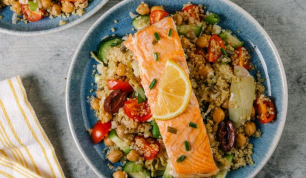

PanSeared Salmon with Quinoa Salad
Dish Type: Main Course
Dietary Preference: HighProtein, GlutenFree
Cooking Difficulty: Medium
Ingredients
2 salmon fillets
1 cup quinoa
1 cucumber
10 cherry tomatoes
½ red onion
Olive oil, as needed
Lemon juice, as needed
Salt and black pepper, to taste
Instructions
1. Cook the Quinoa:
Rinse the quinoa thoroughly under cold water.
Cook the quinoa with water in a 1:2 ratio until tender. Let it cool.
2. Prepare the Salmon:
Season the salmon fillets with salt and black pepper. Let them marinate for 10 minutes.
Heat a pan with olive oil over medium heat.
Place the salmon fillets in the pan and sear each side for about 45 minutes until golden brown
and
cooked through.
Squeeze lemon juice over the cooked salmon and set aside.
3. Prepare the Salad:
Dice the cucumber and halve the cherry tomatoes.
Finely slice the red onion.
In a large bowl, combine the cooked quinoa, cucumber, cherry tomatoes, and red onion.
Drizzle with olive oil and lemon juice, then season with salt and black pepper. Mix well.
4. Assemble and Serve:
Place the quinoa salad on plates and top with the panseared salmon fillets.
Serve immediately.